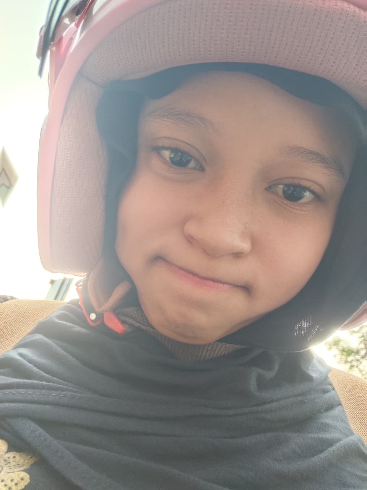
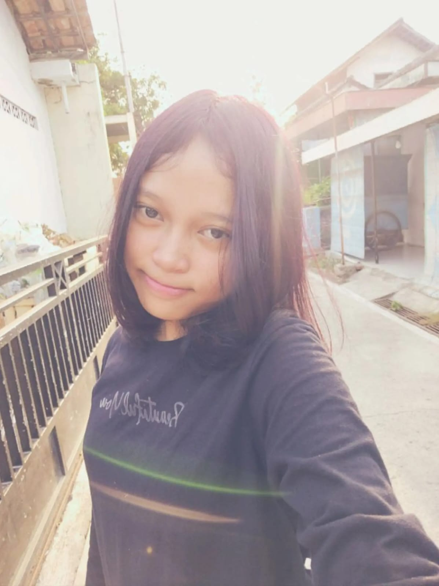
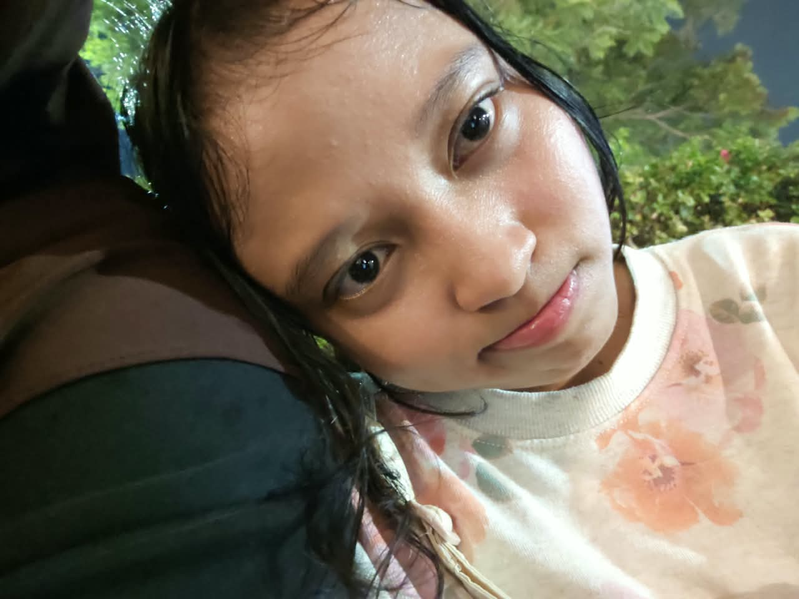
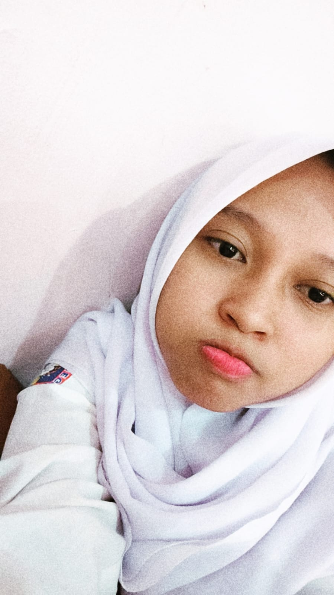
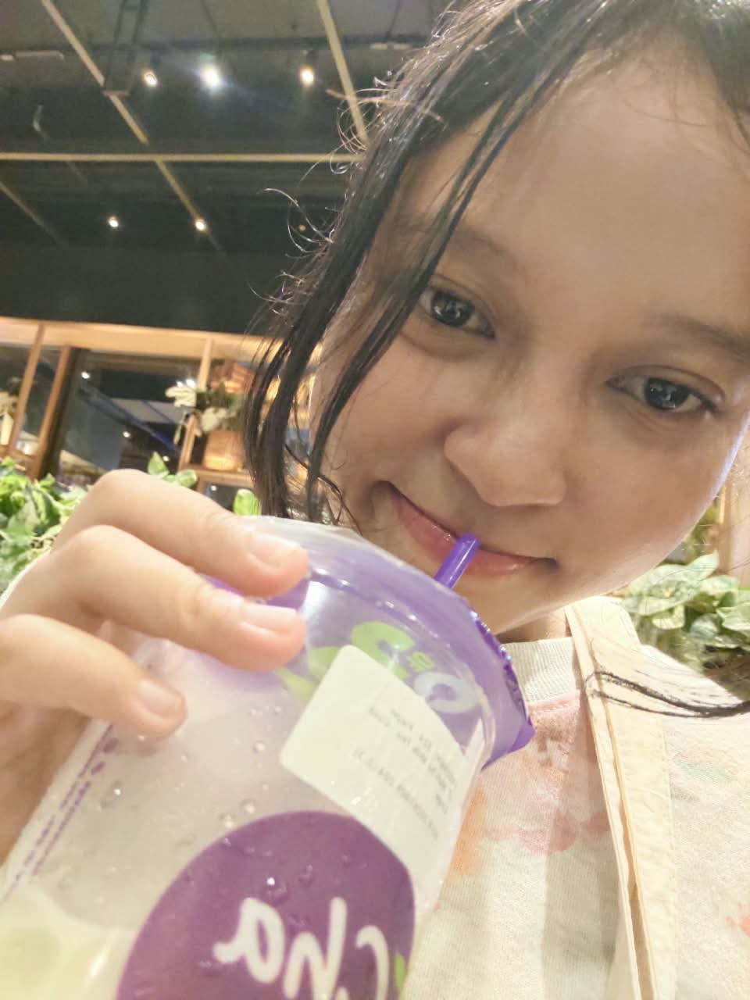

Putar musiknya sambil baca makna di bawahnya yaa...

1. Fix You - Coldplay
Sembuhkan trauma bersama ✨
inii lagu punya makna yang dalemm buat kamuu. berisi makna yang intinya aku pengennn bangett buat pulihin semua rasa trauma, trust issue yang pernah kamuu miliki. disini akuu bakal jagainn bangettt kamu dari semua rasa sakit yang pernah kamu terima sebelumnya. 🫂

2. You! - LANY
Lagu idol kamu 💖
of courseee ini laguu bakal aku taruhh banget di kamuu, selain lagu ini juga buatan idol kamu, lagu ini juga menggambarkan sosok dirimuu seperti liriknyaa: "You're the sun to the moon, You're my ocean, painted blue, You, I'm nothing without you"

3. Drop Dead - Olivia Rodrigo
Momen rasa terharu 🥺
laguu yang bisa bikinn aku bangga. ketika waktu itu kamuu post tentang akuu pakai sound ini, disitulah aku kayakk ngerasa terharuuu 🥺, akhirnya aku bisa dapetin wanita yang bisa menghargai akuu dan bangga punyaaa seorang diriku. 😊

4. You Are Not Alone - MJ
Teman saat sepi & trauma 🤍
lagu inii punya makna sendiri bagikuu sihh, aku dulu waktu habis diselingkuhin sama pas masih kena medical trauma, aku selalu nyetel lagu inii... dan aku ngerasa ditemeninn. 🥹 sama halnya ketika akuu sama kamuu sekarang, akhirnya akuu bisa bener-bener ngerasa ditemeninnn, disayangg, dan dihargai layaknya cowo yang butuh ibunya. 🥺🤍 and of coursee ini lagu juga ada maknanya buat kamuu, dari judulnya ajaa aku gabakal ngebiarin and ngerasainn apa-apa harus sendirii, apa-apa ngerasa kesepiann. 🫂💕

5. A Thousand Years - Christina Perri
Sampai masa depan ✨
lagu ini bagiku punya makna yang relate dan dalemm bangett siii, dan menurutku hanya cocok dipakai ketika kita udah jadian nanti, dan setelah kita... married? hehehhh. 😆 makna lagu ini bagiku adalahh ketika aku akhirnyaaa bisa dapetinn hati kamuu, dan kamu akhirnya menerima cintaaku jugaa. 🥺 dan aku rasa... ini waktu yang tepat.
6. Surat Cinta Untuk Starla - Virgoun
Surat Cinta Untuk Araa 💌
dari aku kecill aku sukaaa bangett sama lagu inii, dan aku bener-bener pengen lagu ini di seseorang cuman belum ada yang cocok. dan sekarang kamuu adalah orang yang tepatt buat menggambarkan relatenya lagu inii ke kamuu. 😄
"Teruntuk kamu, hidup dan matiku. Aku tak tahu lagi harus dengan kata apa aku menuliskannya, atau dengan kalimat apa aku mengungkapkannya. Karena untuk kesekian kalinya, kau buat aku kembali percaya akan kata CINTA. Dan benar bahwa cinta masih berkuasa di atas segalanya. Ketika hati yang rapuh ini diuji oleh materi, diuji oleh duniawi... untuk kesekian kali. Lagi, lagi, dan lagi." — Hema Candra